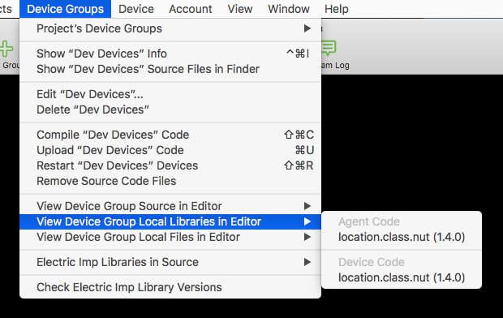
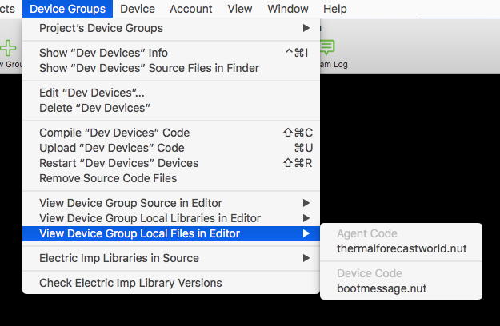

Squinter“A Squirrel Integrator”
Contents |
- Working With Projects and Products
- Working With Device Groups
- Working With Devices
- Including Libraries In Your Code
- Debugging Code
- Configuring Squinter
Incorporating Libraries Into Your Code
Squinter lets you incorporate multiple files into the source code that is deployed to a given Device Group. Electric Imp applications comprise two files: one for device code, the other for cloud-based agent code, but Squinter lets you embed into them links to other files, such as local libraries.
For example, you might want to use the same library in multiple Device Groups — they all use the same sensor, say — even between Device Groups that belong to different Projects. Sharing a single library file allows you to update that file without having to edit every listing of device or agent code that uses it. You just recompile each Device Group’s source code to incorporate the changes you’ve made.

Squinter expects your primary source code files — a Device Group’s base device and agent code — to be
named in the standard Electric Imp schema: *.agent.nut and *.device.nut for, respectively,
your agent and device code. The two identifiers (represented here by the wildcard *) need not be identical.
Local library files should be entered into your agent and device source code using the following syntax:
#import "library_filepath\library_filename"
#include "library_filepath\library_filename"
This is to distinguish these libraries from Electric Imp online libraries, which use the #require directive.
The name of the library file is arbitrary, but *.class.nut and *.library.nut are the
recommended forms. You may include a full Unix filepath; if you only provide a filename, Squinter expects the file to
reside in the same directory as the *.squirrelproj project file (see
‘Working with Projects and Products’). You can specify files that need to be reached by moving up through
your folder hierarchy by including ..
#import "../../../generic/bootmessage.nut"
This means go up three folders then back down to the folder *generic* and thus to the file *bootmessage.nut*.

Internally, Squinter stores all file locations as paths relative to the project file, though you can choose how file
paths are listed by changing the app’s Preferences. When Squinter compiles code, it re-checks the links it has against
those included in the #include statement, updating its internal record as required. Squinter will warn you
if you move a file while is running.
Squinter lets you store both library files and blocks of Squirrel or other data in *.nut and *.txt
files. At compilation, all of these sources are inserted into a master copy of the source code, and it is this ‘compiled’
Squirrel which will be uploaded to the selected Device Group.
Next: Debugging Code